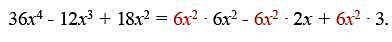

Factorización
En distintas áreas de la matemática, la factorización juega un rol de enorme importancia en el tratamiento de los objetos de estudio.
En matemática, específicamente en Álgebra, factorizar un objeto significa descomponerlo como un producto de otros objetos de la misma naturaleza. En particular, factorizar un polinomio consiste en expresarlo como un producto de otros polinomios; cada polinomio en el producto es un factor del polinomio original.
Esta unidad está dedicada a la factorización de polinomios. Los conocimientos, habilidades y experiencias adquiridas en los cursos precedentes serán de gran utilidad, en particular, el estudio de los polinomios, y en especial, los denominados productos notables o productos especiales.
Factor común
De acuerdo con la propiedad distributiva
3r (a + s) = 3ra + 3rs
y de aquí, por simetría, se obtiene la igualdad equivalente
3ra + 3rs = 3r (a + s).
Igual que en el ejemplo arriba expuesto, en cada caso usted obtendrá una igualdad, cuya parte izquierda es la expresión dada y la parte derecha es el desarrollo encontrado. si una expresión es factor común de todos los términos de un polinomio, entonces dicha expresión aparecerá como un primer factor en la factorización del polinomio. El segundo factor es el cociente entre el polinomio y la expresión.
Cuando ves que una expresión algebraica de más de un término tienen en común uno o varios factores decimos que podemos sacar el factor o factores comunes:
Por ejemplo:
36 + 24 tienen en común a 12 como factor porque (36 = 12 x 3) y (24 = 12 x 2) Esto quiere decir que 36 + 24 es igual a (12 x 3 + 12 x 2)
Vemos que en la suma (12 x 3 + 12 x 2) cada termino tiene a 12 como factor común
Para sacar el factor comun debes de hacer dos cosas
1 - Escribir el factor común
2 - Abrir un paréntesis y escribir dentro de él el cociente de cada término por el valor que está delante del paréntesis 36 + 24 = 12( 3 + 2) El factor común es 12
Lo escribimos y abrimos un paréntesis y dentro de él escribimos el cociente de cada término entre 12
(36/12 = 3) y (24/12 = 2)
Factor común monomio
Considere el polinomio
a. Halle el máximo común divisor de los coeficientes.
b. Identifique las letras que son comunes a todos los términos del
polinomio y tómelas con su menor exponente.
c. Multiplique los resultados de los incisos a) y b)
Con este procedimiento usted puede visualizar el factor común a
extraer para obtener la factorización del polinomio; es precisamente
el monomio obtenido en este inciso c).
d. Factorice el polinomio dado, tomando el monomio encontrado en el
inciso c) como un primer factor. ¿Cómo se halla el segundo factor?
>Repita el ejercicio con el polinomio
Un monomio es divisor de otro monomio si el coeficiente del primero es
divisor del coeficiente del segundo y cada literal del primero aparece
en el segundo monomio con menor o igual exponente.
Factor común polinomio
Factorizar el polinomio
El máximo común divisor de los coeficientes es 6. La letra x aparece en
todos los términos del polinomio, la tomamos con su menor exponente.
El máximo común divisor de los términos del polinomio es entonces (6x)^-2
Dividimos cada término entre (6x)^-2 y lo expresamos como el producto
indicado del cociente por (6x)^-2. 
Saquemos ahora factor común.
La factorización es:
Observe que los términos del segundo factor de la parte derecha, son
los que resultan de dividir los términos del polinomio original entre su
máximo común divisor.